堀内 勉
ほりうち つとむ
多摩大学経営大学院 特任教授多摩大学
日本興業銀行
About
答えを
知識その
本サロンでは、
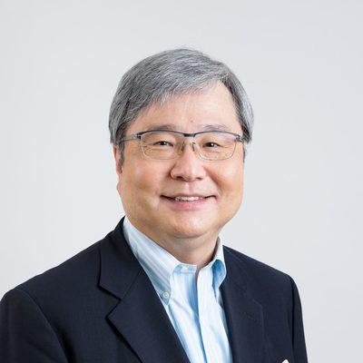
共同代表Representative Director
多摩大学経営大学院 特任教授多摩大学
日本興業銀行
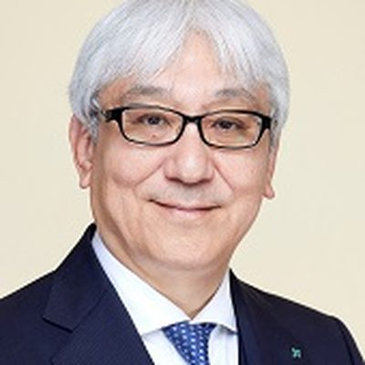
共同代表Representative Director
経済同友会 筆頭副代表幹事日本たばこ産業（JT）
JTの
Features
講演会と
会場は
会場は
思考THINK
学習LEARN
実践PRACTICE
01
経験豊かな
02
各回の
03
修了式では、
Overview
| 期間 | 2027年4月10日 |
|---|---|
| 時間 | 土曜日の |
| 会場 | 講演会｜ |
| 対象 | 企業の |
| 定員 | 20名程度 |
| 参加者 | 受講生に |
| 受講料 | 個人｜1,200,000円（消費税別）企業｜1,800,000円（消費税別）開講前に |
| 懇親会費 | 別途 |
| 主催 | 一般社団法人 知のエグゼクティブサロン |
| 協力 | 日立製作所 |
会場・アクセス
講演会場
東京都
Application
専用フォームに
お申込み内容をもとに
事務局より
開講前に
第1回の
Program & Speakers
各回とも
会場｜
ほりうち つとむ
多摩大学経営大学院 特任教授多摩大学
日本興業銀行
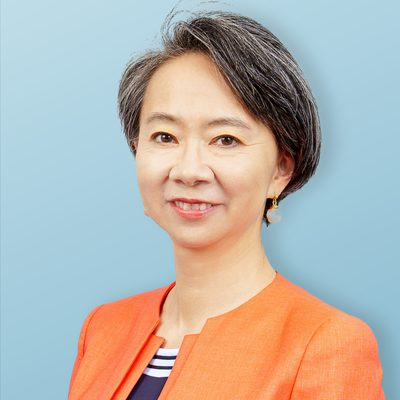
しのだ まきこ
エール株式会社 取締役
日本長期信用銀行、
会場｜
いわい むつお
経済同友会 筆頭副代表幹事日本たばこ産業（JT）
JTの
もう1名の
会場｜
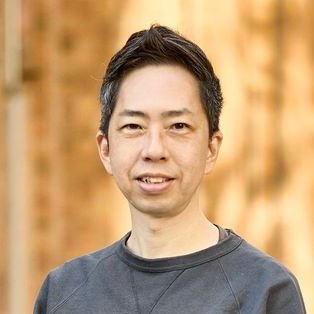
くらもと りょうすけ
東京大学
専門は
かとう よしゆき
立教大学文学部
宗教改革期以降の
会場｜
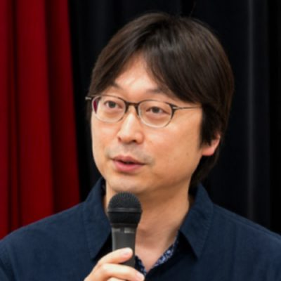
ふるた てつや
東京大学大学院
専門は
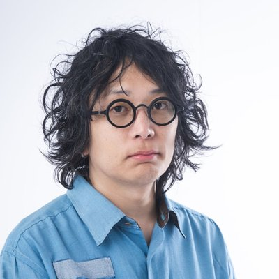
ちゅ ひちょる
大阪大学
専門は
会場｜
おおた ひろき
東京大学大学院
ゲノム人類学
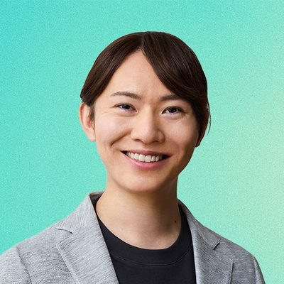
あんの たかひろ
参議院議員チームみらい 党首
AIエンジニア・
会場｜
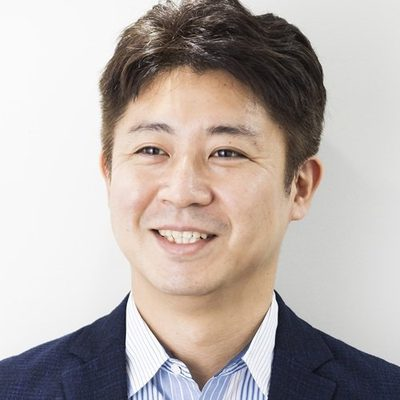
やすだ ようすけ
政策研究大学院大学 教授
経済学者。
しぶさわ けん
シブサワ・アンド・カンパニー 代表取締役コモンズ投信 取締役会長
＆Capitalの
会場｜
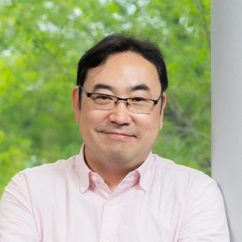
のむら やすのり
カリフォルニア大学
理論物理学者。
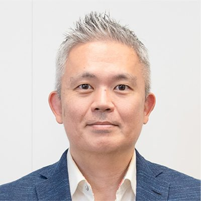
かない りょうた
株式会社アラヤ 代表取締役CEO
認知神経科学者。
会場｜
やまぐち しゅう
独立研究者・著作家・
人文科学と
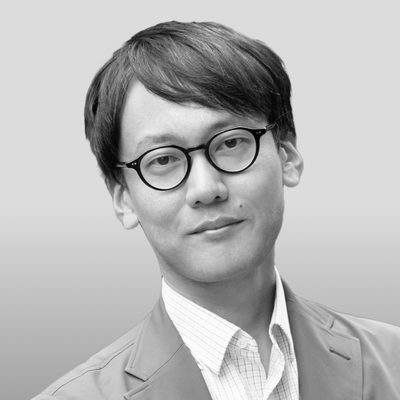
さいとう こうへい
東京大学大学院
専門は
会場｜
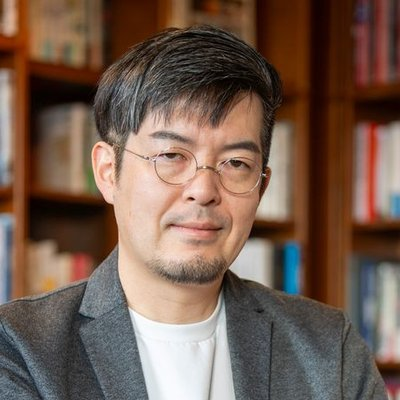
こいずみ ゆう
東京大学
専門は
もう1名の
会場｜
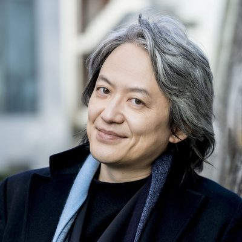
すずき まさと
指揮者・鍵盤奏者バッハ・コレギウム・ジャパン 首席指揮者
東京藝術大学、
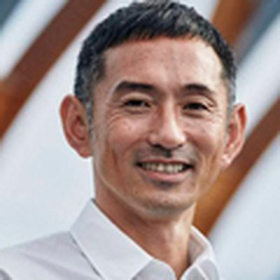
ためすえ だい
東京大学
男子400m
会場｜
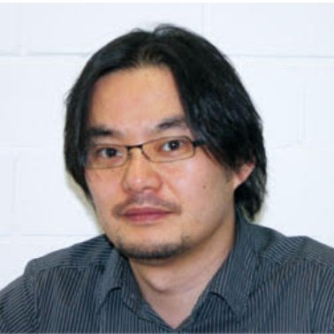
わたなべ まさたか
東京大学大学院
神経科学の
やすかわ しんいちろう
グレートジャーニー合同会社 代表社員
マッキンゼー、
会場｜
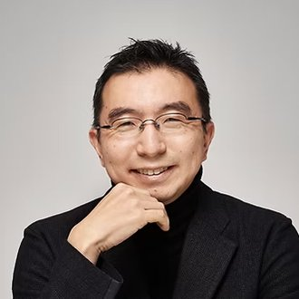
ふじもと そうすけ
建築家藤本壮介建築設計事務所 主宰
東京大学
写真 © Jan Buus
せんざき あきなか
社会構想大学院大学 社会構想研究科長・教授
専門は
Coordinators
各回の
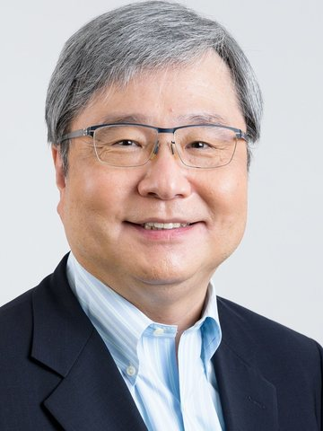
コーディネーター
ほりうち つとむ
多摩大学経営大学院 特任教授多摩大学
東京大学
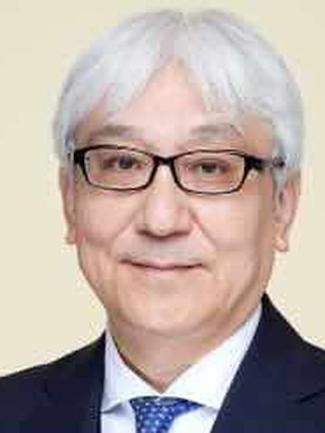
コーディネーター
いわい むつお
経済同友会 筆頭副代表幹事日本たばこ産業（JT）
日本専売公社
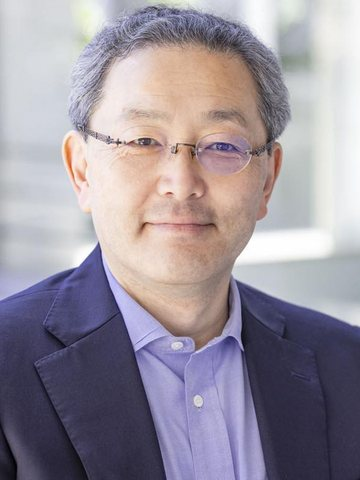
コーディネーター
みお とおる
ミオアンドカンパニー 代表取締役
東京大学
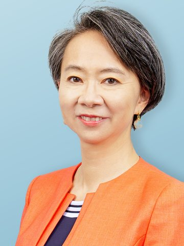
コーディネーター
しのだ まきこ
エール株式会社 取締役
慶應義塾大学
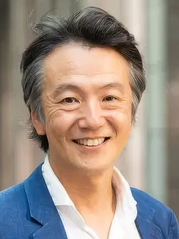
コーディネーター
たかつ なおし
IMD アフィリエイト（前 IMD 北東アジア代表）
スイスの
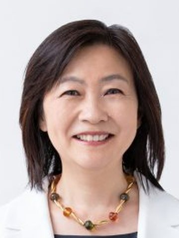
コーディネーター
くろだ ゆきこ
ピープルフォーカス・
慶應義塾大学
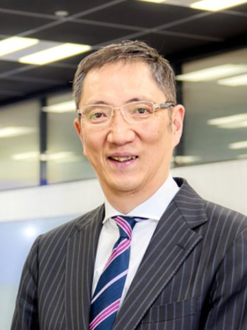
コーディネーター
きむら なおのり
経営共創基盤（IGPI） 共同経営者マネージングディレクター
ベンチャー企業の
Books